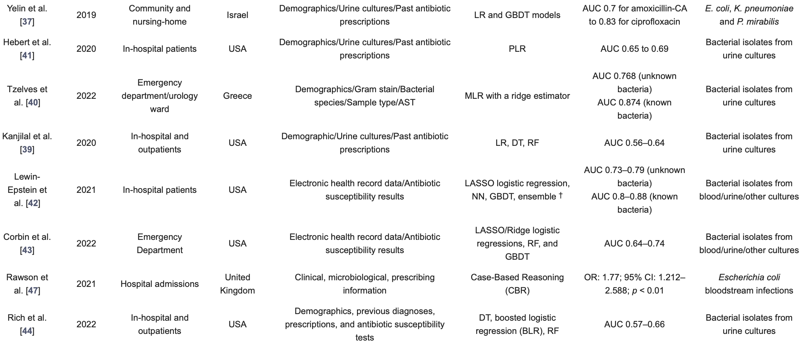

Muitos médicos que não são especialistas em infecções tratam desses casos em hospitais, seguindo diretrizes antimicrobianas locais e políticas baseadas em evidências. No entanto, a adesão a essas políticas de prescrição geralmente é deficiente devido a fatores humanos e comportamentais que influenciam as decisões médicas. Por outro lado, a preocupação com a alta mortalidade relacionada à prescrição tardia de antibióticos, o aumento das infecções resistentes a medicamentos e a falta de diagnósticos precisos para orientar decisões dinâmicas levam os médicos a frequentemente prescreverem antibióticos em excesso.
Estudos mostram que abordagens baseadas em computação, como recomendações de medicamentos guiadas por computador, podem reduzir a proporção de prescrições inadequadas. Além disso, o uso de algoritmos de aprendizado de máquina (ML) em dados de prontuários eletrônicos pode prever a resistência a antibióticos e recomendar tratamentos mais precisos para infecções urinárias. No entanto, esses modelos preditivos muitas vezes precisam ser reajustados para refletir padrões locais de resistência e características individuais dos pacientes.
Personalizar a seleção de antibióticos com base em antibiogramas personalizados pode melhorar a segurança do paciente e a gestão de antibióticos, reduzindo o uso desnecessário de antibióticos de amplo espectro. No entanto, a implementação desses modelos na prática clínica e seu impacto na prescrição de antibióticos ainda requer estudos adicionais.
Além disso, é importante considerar que infecções resistentes podem surgir mesmo com o uso de tratamentos direcionados, devido à dinâmica das infecções bacterianas e à diversidade de cepas. Portanto, algoritmos de aprendizado de máquina podem ser úteis para recomendar tratamentos personalizados com base no perfil microbiológico do paciente e no histórico de uso de antibióticos.
Sakkagianni após a realização de uma pesquisa literaria na área conseguiu encontrar várias pesquisas importantes que conseguem demonstrar um grande avanço e utilibilidade da utilização de aprendizado de máquina para suporte de predição de antibioticos para os pacientes, como pode ser visto na tabela abaixo:
Embora haja avanços promissores no uso de ML para apoiar decisões de prescrição de antibióticos, é necessário um estudo mais aprofundado sobre como essas ferramentas serão integradas e utilizadas na prática clínica para promover a gestão eficaz de antibióticos e melhorar os resultados dos pacientes.